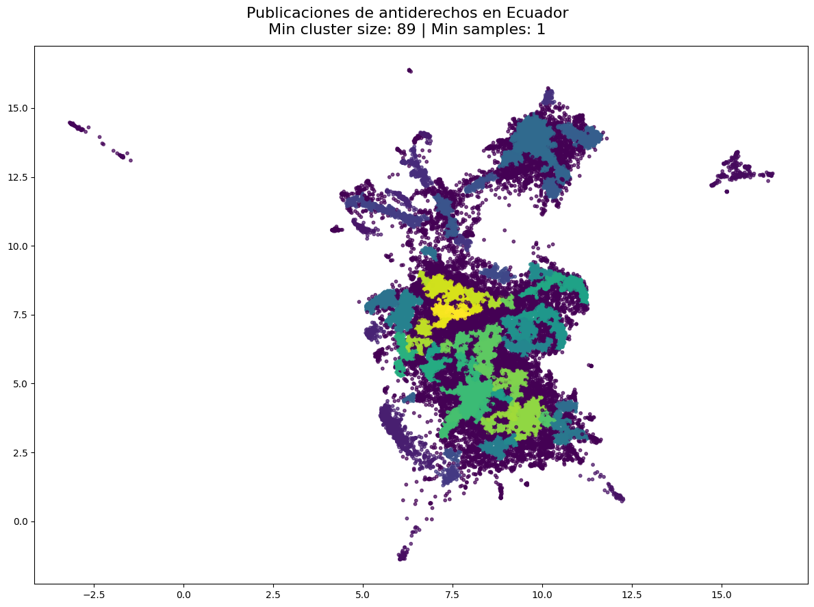
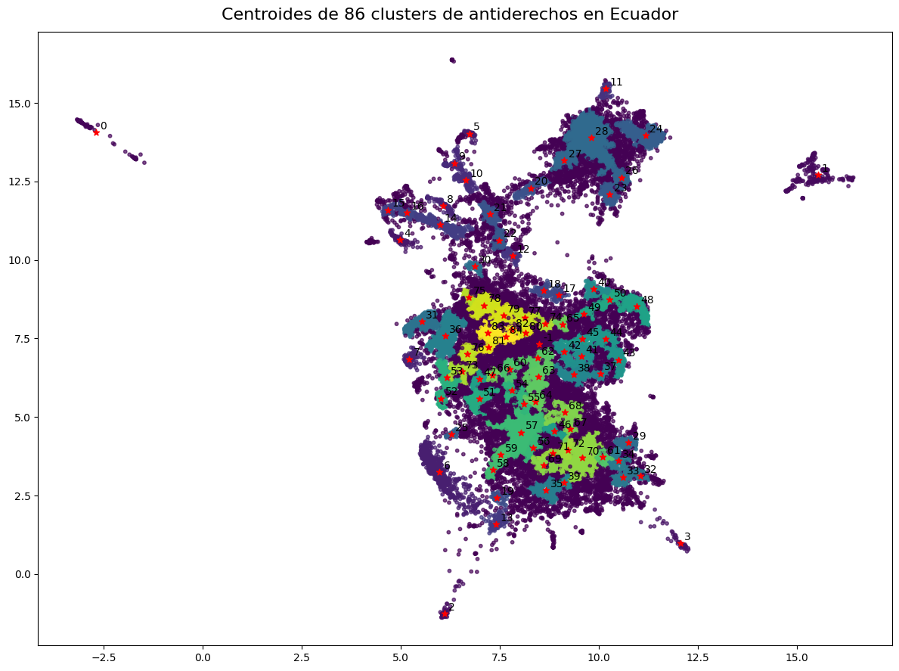

# General
import numpy as np
import pandas as pd
import matplotlib.pyplot as plt
import re
from tqdm import tqdm
import plotly.graph_objects as go
import plotly.express as px
import capir_transfronteriza2_2023.data.load as load
# Topic modeling
from sentence_transformers import SentenceTransformer
from sklearn.preprocessing import StandardScaler
from sklearn.decomposition import PCA
from sklearn.feature_extraction.text import TfidfVectorizer
from umap import UMAP
from sklearn.cluster import KMeans
from hdbscan import HDBSCANImports
Load data
data_processed = load.data_processed
assets = load.assetsRead data from Ecuador
data = pd.read_csv(f"{data_processed}/ecuador.csv")
print(data.shape)
data.head(3)(34693, 4)| user_screen_name | country | text | text_clean | |
|---|---|---|---|---|
| 0 | etorrescobo | Ecuador | Juan Carlos, pero si atrás del video están ust... | Juan Carlos, pero si atrás del video están ust... |
| 1 | etorrescobo | Ecuador | @ViTTO095 @AndresSeminario Se les escapó entre... | $MENTION$ $MENTION$ Se les escapó entre chisme... |
| 2 | etorrescobo | Ecuador | Solidaridad con @LeninArtieda y con @ecuavisa.... | Solidaridad con $MENTION$ y con $MENTION$. Imp... |
Process data
country = data[data['text_clean'].apply(lambda x: isinstance(x, (str, bytes)))]
country['text_cluster'] = country['text'].apply(lambda x: x.replace('\n',''))
print(country.shape)(34573, 5)/tmp/ipykernel_56168/1630503326.py:3: SettingWithCopyWarning:
A value is trying to be set on a copy of a slice from a DataFrame.
Try using .loc[row_indexer,col_indexer] = value instead
See the caveats in the documentation: https://pandas.pydata.org/pandas-docs/stable/user_guide/indexing.html#returning-a-view-versus-a-copy
Create embeddings
# Load model to generate embeddings
sbert_model = SentenceTransformer('all-MiniLM-L6-v2')# Process data with encoder
vecs = sbert_model.encode(country["text_clean"].values)# Apply the dimensionality reduction process.
# Scaler to normalize data
scaler = StandardScaler()
# PCA to reduce multicollinearity and noise
pca_ = PCA(0.9, random_state=5)
# UMAP to reduce dimensionality to two components
umap_ = UMAP(n_components=2,
random_state=5,
metric="cosine",
n_neighbors=50,
min_dist=0.1)
vecs_sc = scaler.fit_transform(vecs)
vecs_pca = pca_.fit_transform(vecs_sc)
vecs_umap = umap_.fit_transform(vecs_pca)# Assign components to dataset
country.loc[:,"COMP_1"] = vecs_umap[:,0]
country.loc[:,"COMP_2"] = vecs_umap[:,1]
# Show data
country.head()/tmp/ipykernel_56168/4075971638.py:2: SettingWithCopyWarning:
A value is trying to be set on a copy of a slice from a DataFrame.
Try using .loc[row_indexer,col_indexer] = value instead
See the caveats in the documentation: https://pandas.pydata.org/pandas-docs/stable/user_guide/indexing.html#returning-a-view-versus-a-copy
/tmp/ipykernel_56168/4075971638.py:3: SettingWithCopyWarning:
A value is trying to be set on a copy of a slice from a DataFrame.
Try using .loc[row_indexer,col_indexer] = value instead
See the caveats in the documentation: https://pandas.pydata.org/pandas-docs/stable/user_guide/indexing.html#returning-a-view-versus-a-copy
| user_screen_name | country | text | text_clean | text_cluster | COMP_1 | COMP_2 | |
|---|---|---|---|---|---|---|---|
| 0 | etorrescobo | Ecuador | Juan Carlos, pero si atrás del video están ust... | Juan Carlos, pero si atrás del video están ust... | Juan Carlos, pero si atrás del video están ust... | 6.925628 | 9.224609 |
| 1 | etorrescobo | Ecuador | @ViTTO095 @AndresSeminario Se les escapó entre... | $MENTION$ $MENTION$ Se les escapó entre chisme... | @ViTTO095 @AndresSeminario Se les escapó entre... | 7.030454 | 7.164153 |
| 2 | etorrescobo | Ecuador | Solidaridad con @LeninArtieda y con @ecuavisa.... | Solidaridad con $MENTION$ y con $MENTION$. Imp... | Solidaridad con @LeninArtieda y con @ecuavisa.... | 8.251235 | 4.659515 |
| 3 | etorrescobo | Ecuador | Fuerza Ecuador. « MoniVelasquezV: 🔴 Te salvé y... | Fuerza Ecuador. « MoniVelasquezV: :red_circle:... | Fuerza Ecuador. « MoniVelasquezV: 🔴 Te salvé y... | 5.924327 | 8.702713 |
| 4 | etorrescobo | Ecuador | Luchito fue para la Asamblea Nacional casi com... | Luchito fue para la Asamblea Nacional casi com... | Luchito fue para la Asamblea Nacional casi com... | 7.050543 | 8.205220 |
# Visualize the distribution of embeddings with a hover to see the tweets.
fig = px.scatter(
country,
x="COMP_1",
y="COMP_2",
hover_data=["user_screen_name", "text_clean"])
fig.write_html(f"{assets}/ecuador/ecuador.html")
fig.show()Unable to display output for mime type(s): application/vnd.plotly.v1+jsonClustering
# Apply the HDBSCAN algorithm to extract the clusters.
mc_size = 89
m_samples = 1
db_model = HDBSCAN(min_cluster_size=mc_size,
min_samples=m_samples,
metric="euclidean",
)
db_model.fit(country.loc[:,["COMP_1", "COMP_2"]])
country.loc[:, "CLUSTER"] = db_model.labels_
country.loc[:, "PROBA"] = db_model.probabilities_huggingface/tokenizers: The current process just got forked, after parallelism has already been used. Disabling parallelism to avoid deadlocks...
To disable this warning, you can either:
- Avoid using `tokenizers` before the fork if possible
- Explicitly set the environment variable TOKENIZERS_PARALLELISM=(true | false)
huggingface/tokenizers: The current process just got forked, after parallelism has already been used. Disabling parallelism to avoid deadlocks...
To disable this warning, you can either:
- Avoid using `tokenizers` before the fork if possible
- Explicitly set the environment variable TOKENIZERS_PARALLELISM=(true | false)
huggingface/tokenizers: The current process just got forked, after parallelism has already been used. Disabling parallelism to avoid deadlocks...
To disable this warning, you can either:
- Avoid using `tokenizers` before the fork if possible
- Explicitly set the environment variable TOKENIZERS_PARALLELISM=(true | false)
huggingface/tokenizers: The current process just got forked, after parallelism has already been used. Disabling parallelism to avoid deadlocks...
To disable this warning, you can either:
- Avoid using `tokenizers` before the fork if possible
- Explicitly set the environment variable TOKENIZERS_PARALLELISM=(true | false)/tmp/ipykernel_56168/544355622.py:11: SettingWithCopyWarning:
A value is trying to be set on a copy of a slice from a DataFrame.
Try using .loc[row_indexer,col_indexer] = value instead
See the caveats in the documentation: https://pandas.pydata.org/pandas-docs/stable/user_guide/indexing.html#returning-a-view-versus-a-copy
/tmp/ipykernel_56168/544355622.py:12: SettingWithCopyWarning:
A value is trying to be set on a copy of a slice from a DataFrame.
Try using .loc[row_indexer,col_indexer] = value instead
See the caveats in the documentation: https://pandas.pydata.org/pandas-docs/stable/user_guide/indexing.html#returning-a-view-versus-a-copy
# Visualize clusters
plt.figure(figsize=(12,9))
plt.scatter(vecs_umap[:,0], vecs_umap[:,1], alpha=0.7, c=db_model.labels_, s=10)
plt.suptitle(f"Publicaciones de antiderechos en Ecuador\nMin cluster size: {mc_size} | Min samples: {m_samples}", fontsize=16)
plt.tight_layout()
plt.savefig(f"{assets}/ecuador/ecuador_clusters")
plt.show()
# Extract the centroid of each cluster
cl_centroids = {}
for i in sorted(country["CLUSTER"].unique()):
cl_centroids[i] = country[country["CLUSTER"] == i][["COMP_1", "COMP_2"]].mean().values
centroids_array = np.array(list(cl_centroids.values()))
fig, ax = plt.subplots(figsize=(12,9))
ax.scatter(vecs_umap[:,0], vecs_umap[:,1], s=10, alpha=0.7, c=db_model.labels_)
ax.scatter(centroids_array[:,0], centroids_array[:,1], marker="*", c="red")
for i in cl_centroids:
ax.annotate(i, cl_centroids.get(i)+np.array([0.1, 0.1]))
plt.suptitle(f"Centroides de {len(cl_centroids)} clusters de antiderechos en Ecuador", fontsize=16)
plt.tight_layout()
plt.savefig(f"{assets}/ecuador/ecuador_centroids", dpi=fig.dpi)
plt.show()
from sklearn.metrics.pairwise import euclidean_distances
N = 20
with open(f"{assets}/ecuador/ecuador.txt", 'w') as f:
for i in cl_centroids:
point = cl_centroids.get(i).reshape(1,-1)
ix_min_dist = np.argsort(euclidean_distances(point, country.loc[:, ["COMP_1", "COMP_2"]])).flatten()[:N]
print(f"\n[Tweets más representativos del cluster {i}]", file=f)
users = country.iloc[ix_min_dist, country.columns.get_loc("user_screen_name")].values
texts = country.iloc[ix_min_dist, country.columns.get_loc("text_cluster")].values
tweets = [[x, y] for x, y in zip(users, texts)]
print('\n'.join([': '.join(map(str, inner_list)) for inner_list in tweets]), file=f)